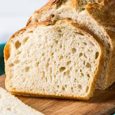

Delicious Chocolate Cake

This rich and moist chocolate cake is perfect for any occasion. Made with high-quality cocoa powder and topped with creamy frosting, it's a dessert you'll want to make again and again.
Homemade Sourdough Bread
Learn the art of sourdough bread baking! With a crispy crust and a soft, tangy interior, this bread is perfect for sandwiches or enjoying with a pat of butter.